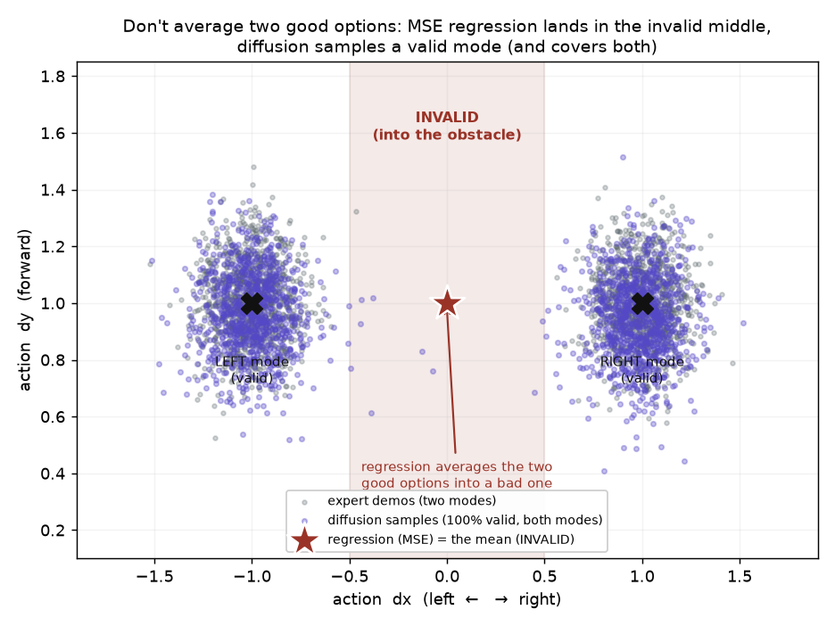

When the expert can go left OR right around an obstacle, MSE regression predicts the average — straight into it. A diffusion policy models the whole distribution and samples a valid mode.

Robot demonstrations are multimodal: for one situation there are often several equally-valid actions (go left or go right around an obstacle), so the action data forms two clusters with an invalid gap between them. An MSE-trained regression policy learns the conditional mean E[a|state], which lands squarely in that gap — the average of two good options is a bad one. A diffusion policy instead learns the full distribution p(a|state) by denoising, so sampling it returns one coherent, valid action rather than an average.